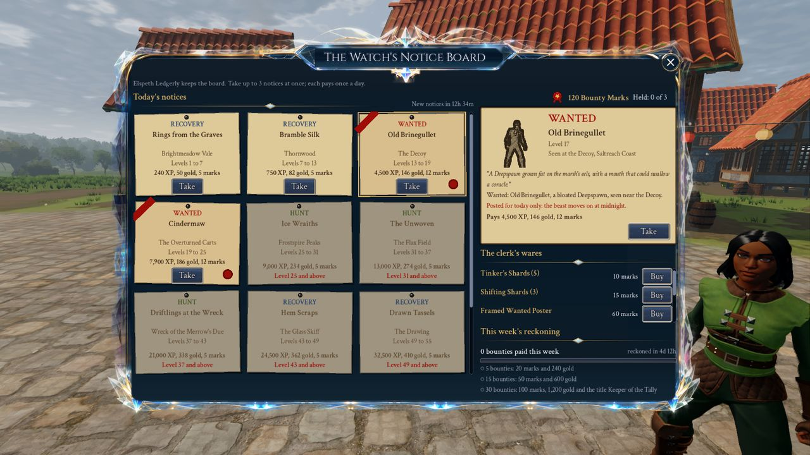
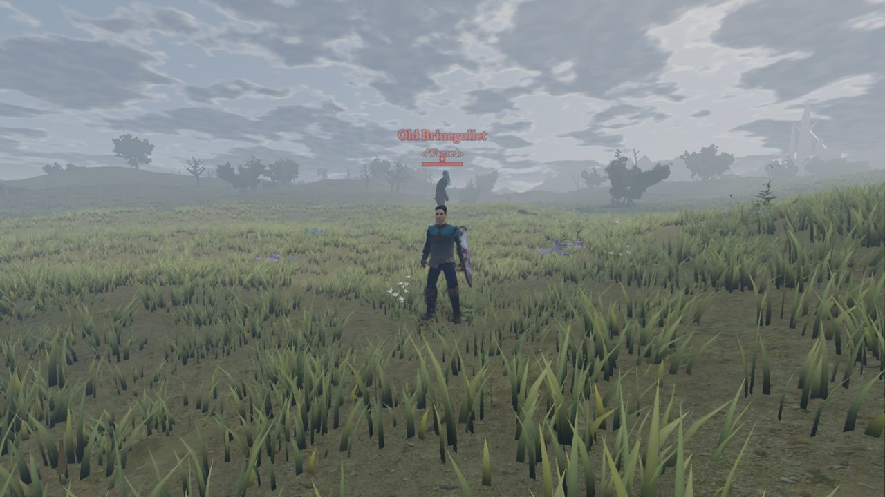
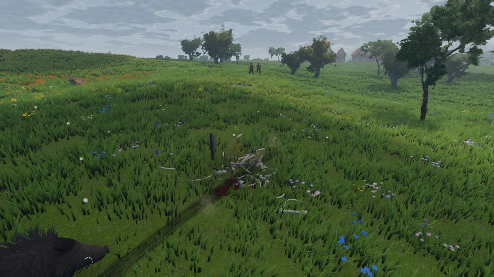
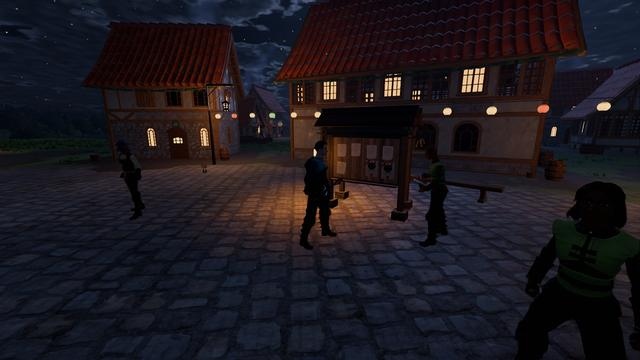
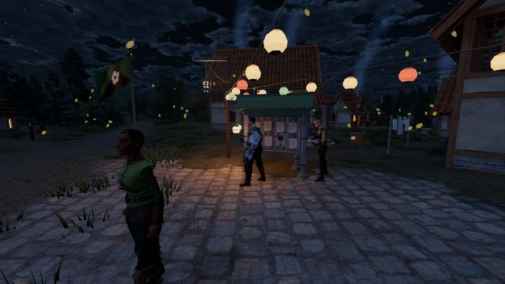
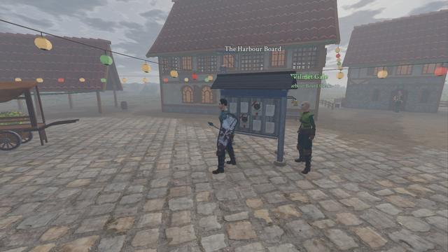
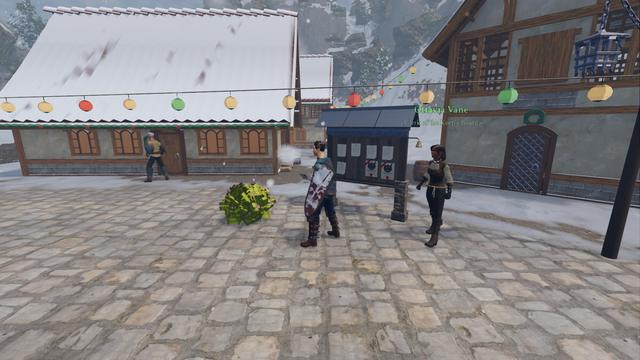

Notice boards Bounties for every level from 1 to 60: the six towns' boards and clerks, hunts, recoveries and the twenty wanted beasts, Bounty Marks and what they buy, and the week's reckoning.
Every town has a notice board on its square, with its clerk beside it, and there is work on it for every hero from level 1 to 60 (1.14.108). Each board posts 12 notices a day: one for each of the 10 bands of levels, so every hero finds work at every board, and 2 more for its own town's levels. The notices are the same all day on every server, and new ones go up at midnight (UTC). The notice board on the wall of each inn opens its town's board too, and pins up the day's real notices, changing at midnight even while you are inside. Each town's board hangs a lantern of the town's own kind on an iron arm, lit from dusk to dawn, so the notices can be read at night, and its clerk writes in a ledger, looks up when you come to read and tells you what went up this morning (1.14.109).
There are three kinds of notice. A hunt asks you to thin out a pack troubling the roads, and a recovery to bring back what the creatures carry; both keep until you hand them in or drop them. A wanted notice names one of 20 beasts. On a day it is posted the beast waits at its camp, an elite with its own name, and you can see it from a long way off by the red seal over it and its red name. Each wanted beast has a lair at its spot, old bones and a stake with a torn notice. Anyone may slay it, and every hero who took its notice and struck it takes its token, and with it the bounty and its marks, whoever lands the last blow (1.14.109; before, only the killer's party was paid); the others get its spoils and the experience only. Slain, it stands again three minutes later until the day ends. A wanted notice lapses at midnight unless its beast is slain, and the beast is gone by then; a beast still being fought at midnight stays until the fight ends, and its holders are paid the next day. Notices that lapse are taken off at midnight, and a hero who was away is told what lapsed while they were gone.
You can hold 3 notices at once, and each pays once a day; hand them in at any board. A notice above your level can't be taken: each is for heroes from the bottom of its band up. Every bounty pays experience, gold and Bounty Marks : a hunt or recovery 5 marks, a wanted beast 12. The clerks sell for marks:
The clerks sell Marks Tinker's Shards (5) 10 Five Tinker's Shards, for the forge. Shifting Shards (3) 15 Three Shifting Shards, to try a piece again. Framed Wanted Poster 60 A wanted poster in a plain frame, for the wall of your room. The Hunter's Tally 250 Six claws on an iron crescent, for the hunter who has brought in six wanted beasts. Sold once you have slain six wanted beasts you held the notice for. Board Hound 250 A grizzled tracking hound that follows you about and sniffs at every notice. Bounty-Rider's Bay 450 A strong bay horse in the bounty-riders' tack, for hunters who ride far for their pay.
The week runs from Monday (UTC), and each tier of the reckoning is paid once a week as you reach it, the gold by your level; the week's count keeps through a server restart:
Bounties paid in a week The reckoning pays 5 20 marks and 10 gold a level (600 at level 60) 15 50 marks and 25 gold a level (1,500 at level 60) 30 100 marks, 50 gold a level (3,000 at level 60) and the title Keeper of the Tally
The deeds: On the Board , A Name at the Board , Wanted No More , Every Face on the Board and Keeper of the Tally .



The boards Levels 1 to 7 Levels 7 to 13 Levels 13 to 19 Levels 19 to 25 Levels 25 to 31 Levels 31 to 37 Levels 37 to 43 Levels 43 to 49 Levels 49 to 55 Levels 55 to 60
The boards6 Harrowford · Elspeth Ledgerly Every notice on that board is a promise the Watch means to keep. Bring me proof and I'll pay it.
Town Harrowford , on the squareClerk Elspeth Ledgerly (Clerk of the Board) Posts 12 notices a day: one from each of the 10 bands of levels, and 2 more for heroes of level 1 to 13 Lantern On an iron arm, of the town's own kind, lit from dusk to dawn (1.14.109) Indoors The notice board on the wall of the inn at Harrowford opens this board too, with the day's notices pinned up Sells Tinker's Shards (5), Shifting Shards (3), Framed Wanted Poster, The Hunter's Tally, Board Hound, Bounty-Rider's Bay, for Bounty Marks 
Millbrook Farms · Arlo Furrowby The farms pin up what's troubling them and I pay out when it stops. Simple as ploughing.
Town Millbrook Farms , on the squareClerk Arlo Furrowby (Keeper of the Farm Board) Posts 12 notices a day: one from each of the 10 bands of levels, and 2 more for heroes of level 1 to 7 Lantern On an iron arm, of the town's own kind, lit from dusk to dawn (1.14.109) Indoors The notice board on the wall of the inn at Millbrook Farms opens this board too, with the day's notices pinned up Sells Tinker's Shards (5), Shifting Shards (3), Framed Wanted Poster, The Hunter's Tally, Board Hound, Bounty-Rider's Bay, for Bounty Marks Lisswen Hollow · Isaura Thackwell The wood keeps its own counsel, but its troubles end up on my board soon enough.
Town Lisswen Hollow , on the squareClerk Isaura Thackwell (Clerk of the Hollow's Board) Posts 12 notices a day: one from each of the 10 bands of levels, and 2 more for heroes of level 7 to 19 Lantern On an iron arm, of the town's own kind, lit from dusk to dawn (1.14.109) Indoors The notice board on the wall of the inn at Lisswen Hollow opens this board too, with the day's notices pinned up Sells Tinker's Shards (5), Shifting Shards (3), Framed Wanted Poster, The Hunter's Tally, Board Hound, Bounty-Rider's Bay, for Bounty Marks 
Tides change and so do the notices. Check the board each morning, same as the weather.
Town Gullhaven , on the squareClerk Wilmet Gale (Harbour Board Clerk) Posts 12 notices a day: one from each of the 10 bands of levels, and 2 more for heroes of level 13 to 25 Lantern On an iron arm, of the town's own kind, lit from dusk to dawn (1.14.109) Indoors The notice board on the wall of the inn at Gullhaven opens this board too, with the day's notices pinned up Sells Tinker's Shards (5), Shifting Shards (3), Framed Wanted Poster, The Hunter's Tally, Board Hound, Bounty-Rider's Bay, for Bounty Marks 
Emberwatch Camp · Dace Ironwright The camp posts its work here: the ash, the Gate, and everything that crawls out of either.
Town Emberwatch Camp , on the squareClerk Dace Ironwright (Sergeant of the Muster Board) Posts 12 notices a day: one from each of the 10 bands of levels, and 2 more for heroes of level 19 to 37 Lantern On an iron arm, of the town's own kind, lit from dusk to dawn (1.14.109) Indoors The notice board on the wall of the inn at Emberwatch Camp opens this board too, with the day's notices pinned up Sells Tinker's Shards (5), Shifting Shards (3), Framed Wanted Poster, The Hunter's Tally, Board Hound, Bounty-Rider's Bay, for Bounty Marks Highwatch Keep · Ottavia Vane The Keep pays for the peaks and for the far places past them. The board hasn't been empty in years.
Town Highwatch Keep , on the squareClerk Ottavia Vane (Clerk of the Keep's Board) Posts 12 notices a day: one from each of the 10 bands of levels, and 2 more for heroes of level 25 to 60 Lantern On an iron arm, of the town's own kind, lit from dusk to dawn (1.14.109) Indoors The notice board on the wall of the inn at Highwatch Keep opens this board too, with the day's notices pinned up Sells Tinker's Shards (5), Shifting Shards (3), Framed Wanted Poster, The Hunter's Tally, Board Hound, Bounty-Rider's Bay, for Bounty Marks 
Levels 1 to 79 The boars have found the barley along the Harrowford road. Thin them out before the harvest is trampled flat.
Notice Slay 8 Meadow Boars in Brightmeadow Level 3; heroes of level 1 and above can take it Where Brightmeadow Vale Quarry Meadow Boar Posted Now and then at any board, more often at The Watch's Notice Board and The Farms' Notice Board Pays 90 experience, 34 gold and 5 Bounty Marks Grey wolves have been coming down to the folds at dusk. Hunt eight of them and the shepherds will sleep.
Notice Slay 8 Grey Wolves in Brightmeadow Level 3; heroes of level 1 and above can take it Where Brightmeadow Vale Quarry Grey Wolf Posted Now and then at any board, more often at The Watch's Notice Board and The Farms' Notice Board Pays 90 experience, 34 gold and 5 Bounty Marks Hollow Thralls have crawled out onto the meadow roads again. Put ten of them back where they belong.
Notice Slay 10 Hollow Thralls in Brightmeadow Level 4; heroes of level 1 and above can take it Where Brightmeadow Vale Quarry Hollow Thrall Posted Now and then at any board, more often at The Watch's Notice Board and The Farms' Notice Board Pays 150 experience, 42 gold and 5 Bounty Marks Cutthroats have been taking the bells off the flocks so they can drive the sheep off unheard. Bring five back.
Notice Recover 5 Sheep Bells from Valley Cutthroats Level 4; heroes of level 1 and above can take it Where Brightmeadow Vale Carried by Valley Cutthroat , about 5 in 10 dropping onePosted Now and then at any board, more often at The Watch's Notice Board and The Farms' Notice Board Pays 150 experience, 42 gold and 5 Bounty Marks Cutthroats are stopping carts between the farms. The Watch wants eight of them stopped for good.
Notice Slay 8 Valley Cutthroats in Brightmeadow Level 5; heroes of level 1 and above can take it Where Brightmeadow Vale Quarry Valley Cutthroat Posted Now and then at any board, more often at The Watch's Notice Board and The Farms' Notice Board Pays 240 experience, 50 gold and 5 Bounty Marks Hollow Bowmen are loosing at travellers from the hedgerows. Find eight and break their bows.
Notice Slay 8 Hollow Bowmen in Brightmeadow Level 5; heroes of level 1 and above can take it Where Brightmeadow Vale Quarry Hollow Bowman Posted Now and then at any board, more often at The Watch's Notice Board and The Farms' Notice Board Pays 240 experience, 50 gold and 5 Bounty Marks The Hollow carry rings taken from the graves they climbed out of. The families want five of them back.
Notice Recover 5 Grave Rings from Hollow Thralls Level 5; heroes of level 1 and above can take it Where Brightmeadow Vale Carried by Hollow Thrall and Hollow Bowman , about 4 in 10 dropping onePosted Now and then at any board, more often at The Watch's Notice Board and The Farms' Notice Board Pays 240 experience, 50 gold and 5 Bounty Marks Wanted: Bristlecrown, a great boar with a white crest, seen by the Fair Field.
“A boar the size of a cart, with a crest of white bristles. It has eaten a whole field of turnips this week.”
Notice Slay Bristlecrown near the Fair Field Level 5; heroes of level 1 and above can take it Where The Fair Field in Brightmeadow Vale The beast Bristlecrown , level 5, a Meadow BoarStands At its lair by The Fair Field (old bones and a stake with a torn notice) on the days it is posted, while a hero is within about 150 metres; slain, it stands again three minutes later until the day ends Paid to Every hero holding its notice who struck it, whoever lands the last blow Lapses At midnight (UTC), unless you have slain it; a beast still being fought then stays until the fight ends Posted Now and then at any board, more often at The Watch's Notice Board and The Farms' Notice Board Pays 350 experience, 50 gold and 12 Bounty Marks Wanted: Greymantle, an old grey wolf, seen near Gorse End.
“An old grey wolf with a ragged ruff, too clever for the shepherds' traps.”
Notice Slay Greymantle near Gorse End Level 5; heroes of level 1 and above can take it Where Gorse End in Brightmeadow Vale The beast Greymantle , level 5, a Grey WolfStands At its lair by Gorse End (old bones and a stake with a torn notice) on the days it is posted, while a hero is within about 150 metres; slain, it stands again three minutes later until the day ends Paid to Every hero holding its notice who struck it, whoever lands the last blow Lapses At midnight (UTC), unless you have slain it; a beast still being fought then stays until the fight ends Posted Now and then at any board, more often at The Watch's Notice Board and The Farms' Notice Board Pays 350 experience, 50 gold and 12 Bounty Marks Levels 7 to 139 A pack of Thornback Stalkers has taken the paths into Thornwood. Hunt ten and break the pack.
Notice Slay 10 Thornback Stalkers in Thornwood Level 9; heroes of level 7 and above can take it Where Thornwood Quarry Thornback Stalker Posted Now and then at any board, more often at The Watch's Notice Board and The Hollow's Notice Board Pays 750 experience, 82 gold and 5 Bounty Marks Lisswen's weavers want the tough silk the Bramblelings spin. Bring six skeins of it.
Notice Recover 6 Bramble Silks from Bramblelings Level 9; heroes of level 7 and above can take it Where Thornwood Carried by Brambleling , about 5 in 10 dropping onePosted Now and then at any board, more often at The Watch's Notice Board and The Hollow's Notice Board Pays 750 experience, 82 gold and 5 Bounty Marks Bramblelings are creeping out of the undergrowth towards Lisswen. Cut ten of them down.
Notice Slay 10 Bramblelings in Thornwood Level 10; heroes of level 7 and above can take it Where Thornwood Quarry Brambleling Posted Now and then at any board, more often at The Watch's Notice Board and The Hollow's Notice Board Pays 950 experience, 90 gold and 5 Bounty Marks Wanted: Nettlefang, a great Thornback Stalker, seen by the Hart's Leap.
“A Thornback Stalker whose spines grow thick as a hedge. Its bite stings for days.”
Notice Slay Nettlefang near the Hart's Leap Level 10; heroes of level 7 and above can take it Where The Hart's Leap in Thornwood The beast Nettlefang , level 10, a Thornback StalkerStands At its lair by The Hart's Leap (old bones and a stake with a torn notice) on the days it is posted, while a hero is within about 150 metres; slain, it stands again three minutes later until the day ends Paid to Every hero holding its notice who struck it, whoever lands the last blow Lapses At midnight (UTC), unless you have slain it; a beast still being fought then stays until the fight ends Posted Now and then at any board, more often at The Watch's Notice Board and The Hollow's Notice Board Pays 1,450 experience, 90 gold and 12 Bounty Marks Hollow Sentinels stand guard over nothing in the deep wood, and strike at anyone who passes. Fell eight.
Notice Slay 8 Hollow Sentinels in Thornwood Level 11; heroes of level 7 and above can take it Where Thornwood Quarry Hollow Sentinel Posted Now and then at any board, more often at The Watch's Notice Board and The Hollow's Notice Board Pays 1,200 experience, 98 gold and 5 Bounty Marks Rootbound Shades drift between the old trees and chill the woodcutters to the bone. Lay eight of them.
Notice Slay 8 Rootbound Shades in Thornwood Level 11; heroes of level 7 and above can take it Where Thornwood Quarry Rootbound Shade Posted Now and then at any board, more often at The Watch's Notice Board and The Hollow's Notice Board Pays 1,200 experience, 98 gold and 5 Bounty Marks Thornwood Ogres have been smashing the charcoal burners' huts. Bring down five of the brutes.
Notice Slay 5 Thornwood Ogres in Thornwood Level 11; heroes of level 7 and above can take it Where Thornwood Quarry Thornwood Ogre Posted Now and then at any board, more often at The Watch's Notice Board and The Hollow's Notice Board Pays 1,200 experience, 98 gold and 5 Bounty Marks The Rootbound Shades hoard the lanterns of the woodcutters they chilled. Recover five of them.
Notice Recover 5 Woodcutter's Lanterns from Rootbound Shades Level 11; heroes of level 7 and above can take it Where Thornwood Carried by Rootbound Shade , about 5 in 10 dropping onePosted Now and then at any board, more often at The Watch's Notice Board and The Hollow's Notice Board Pays 1,200 experience, 98 gold and 5 Bounty Marks Wanted: Gristlebrow, a Thornwood Ogre, seen by the Honey Oak.
“A Thornwood Ogre with a brow like a cliff, who tears the roofs off huts to see what's inside.”
Notice Slay Gristlebrow near the Honey Oak Level 11; heroes of level 7 and above can take it Where The Honey Oak in Thornwood The beast Gristlebrow , level 11, a Thornwood OgreStands At its lair by The Honey Oak (old bones and a stake with a torn notice) on the days it is posted, while a hero is within about 150 metres; slain, it stands again three minutes later until the day ends Paid to Every hero holding its notice who struck it, whoever lands the last blow Lapses At midnight (UTC), unless you have slain it; a beast still being fought then stays until the fight ends Posted Now and then at any board, more often at The Watch's Notice Board and The Hollow's Notice Board Pays 1,750 experience, 98 gold and 12 Bounty Marks Levels 13 to 199 Reef Snappers have taken the beaches the fishers haul their boats onto. Clear ten of them off the sand.
Notice Slay 10 Reef Snappers in the Saltreach Level 14; heroes of level 13 and above can take it Where Saltreach Coast Quarry Reef Snapper Posted Now and then at any board, more often at The Hollow's Notice Board and The Harbour Board Pays 2,000 experience, 122 gold and 5 Bounty Marks Reef Snappers sometimes keep a pearl in their claws. Gullhaven's jeweller will pay for six.
Notice Recover 6 Snapper Pearls from Reef Snappers Level 14; heroes of level 13 and above can take it Where Saltreach Coast Carried by Reef Snapper , about 5 in 10 dropping onePosted Now and then at any board, more often at The Hollow's Notice Board and The Harbour Board Pays 2,000 experience, 122 gold and 5 Bounty Marks Drowned Sailors walk the tideline at night, looking for a ship that sank long ago. Send ten of them back down.
Notice Slay 10 Drowned Sailors in the Saltreach Level 15; heroes of level 13 and above can take it Where Saltreach Coast Quarry Drowned Sailor Posted Now and then at any board, more often at The Hollow's Notice Board and The Harbour Board Pays 2,300 experience, 130 gold and 5 Bounty Marks Storm Gulls are mobbing the drying racks and anyone who goes near them. Bring down ten.
Notice Slay 10 Storm Gulls in the Saltreach Level 15; heroes of level 13 and above can take it Where Saltreach Coast Quarry Storm Gull Posted Now and then at any board, more often at The Hollow's Notice Board and The Harbour Board Pays 2,300 experience, 130 gold and 5 Bounty Marks The Drowned Sailors still wear the keys to their sea chests. The harbour wants five, to open what washed up.
Notice Recover 5 Brass Sea-Chest Keys from Drowned Sailors Level 15; heroes of level 13 and above can take it Where Saltreach Coast Carried by Drowned Sailor , about 5 in 10 dropping onePosted Now and then at any board, more often at The Hollow's Notice Board and The Harbour Board Pays 2,300 experience, 130 gold and 5 Bounty Marks Wanted: Skreeve, a monstrous Storm Gull, seen over the Gull Stones.
“The biggest Storm Gull anyone in Gullhaven has seen, and the loudest. It steals whole fish off the slab.”
Notice Slay Skreeve near the Gull Stones Level 15; heroes of level 13 and above can take it Where The Gull Stones in Saltreach Coast The beast Skreeve , level 15, a Storm GullStands At its lair by The Gull Stones (old bones and a stake with a torn notice) on the days it is posted, while a hero is within about 150 metres; slain, it stands again three minutes later until the day ends Paid to Every hero holding its notice who struck it, whoever lands the last blow Lapses At midnight (UTC), unless you have slain it; a beast still being fought then stays until the fight ends Posted Now and then at any board, more often at The Hollow's Notice Board and The Harbour Board Pays 3,400 experience, 130 gold and 12 Bounty Marks The salt road has its own cutthroats, bolder than the meadow's. The harbour pays for eight of them.
Notice Slay 8 Valley Cutthroats in the Saltreach Level 16; heroes of level 13 and above can take it Where Saltreach Coast Quarry Valley Cutthroat Posted Now and then at any board, more often at The Hollow's Notice Board and The Harbour Board Pays 2,600 experience, 138 gold and 5 Bounty Marks Deepspawn have come up out of the shallows. Kill six before they make a nest of the coves.
Notice Slay 6 Deepspawn in the Saltreach Level 17; heroes of level 13 and above can take it Where Saltreach Coast Quarry Deepspawn Posted Now and then at any board, more often at The Hollow's Notice Board and The Harbour Board Pays 3,000 experience, 146 gold and 5 Bounty Marks Wanted: Old Brinegullet, a bloated Deepspawn, seen near the Decoy.
“A Deepspawn grown fat on the marsh's eels, with a mouth that could swallow a coracle.”
Notice Slay Old Brinegullet near the Decoy Level 17; heroes of level 13 and above can take it Where The Decoy in Saltreach Coast The beast Old Brinegullet , level 17, a DeepspawnStands At its lair by The Decoy (old bones and a stake with a torn notice) on the days it is posted, while a hero is within about 150 metres; slain, it stands again three minutes later until the day ends Paid to Every hero holding its notice who struck it, whoever lands the last blow Lapses At midnight (UTC), unless you have slain it; a beast still being fought then stays until the fight ends Posted Now and then at any board, more often at The Hollow's Notice Board and The Harbour Board Pays 4,500 experience, 146 gold and 12 Bounty Marks Levels 19 to 259 Ember Hounds are running down the camp's supply carts on the ash road. Hunt ten of the pack.
Notice Slay 10 Ember Hounds in the Cinderreach Level 20; heroes of level 19 and above can take it Where Cinderreach Wastes Quarry Ember Hound Posted Now and then at any board, more often at The Harbour Board and The Camp's Muster Board Pays 4,300 experience, 170 gold and 5 Bounty Marks Zealots of the Ashen Choir are preaching fire at the camp's edge. Silence eight of them.
Notice Slay 8 Ashen Choir Zealots in the Cinderreach Level 21; heroes of level 19 and above can take it Where Cinderreach Wastes Quarry Ashen Choir Zealot Posted Now and then at any board, more often at The Harbour Board and The Camp's Muster Board Pays 4,800 experience, 178 gold and 5 Bounty Marks The Ashen Choir carry hymnals full of their fire-songs. The camp wants five, to learn what they sing about.
Notice Recover 5 Ash-Bound Hymnals from Ashen Choir Zealots Level 21; heroes of level 19 and above can take it Where Cinderreach Wastes Carried by Ashen Choir Zealot , about 5 in 10 dropping onePosted Now and then at any board, more often at The Harbour Board and The Camp's Muster Board Pays 4,800 experience, 178 gold and 5 Bounty Marks Cinder Imps are setting the scrub alight around the camp. Put out ten of them.
Notice Slay 10 Cinder Imps in the Cinderreach Level 22; heroes of level 19 and above can take it Where Cinderreach Wastes Quarry Cinder Imp Posted Now and then at any board, more often at The Harbour Board and The Camp's Muster Board Pays 5,300 experience, 186 gold and 5 Bounty Marks The camp's smith wants Cinder Imp horns to temper blades. Bring six.
Notice Recover 6 Cinder Imp Horns from Cinder Imps Level 22; heroes of level 19 and above can take it Where Cinderreach Wastes Carried by Cinder Imp , about 5 in 10 dropping onePosted Now and then at any board, more often at The Harbour Board and The Camp's Muster Board Pays 5,300 experience, 186 gold and 5 Bounty Marks Wanted: Cindermaw, the Ember Hounds' leader, seen by the Overturned Carts.
“An Ember Hound that leads the packs onto the carts, with coals for eyes and a burning bite.”
Notice Slay Cindermaw near the Overturned Carts Level 22; heroes of level 19 and above can take it Where The Overturned Carts in Cinderreach Wastes The beast Cindermaw , level 22, a Ember HoundStands At its lair by The Overturned Carts (old bones and a stake with a torn notice) on the days it is posted, while a hero is within about 150 metres; slain, it stands again three minutes later until the day ends Paid to Every hero holding its notice who struck it, whoever lands the last blow Lapses At midnight (UTC), unless you have slain it; a beast still being fought then stays until the fight ends Posted Now and then at any board, more often at The Harbour Board and The Camp's Muster Board Pays 7,900 experience, 186 gold and 12 Bounty Marks Hollow Pyromancers wander the ash with fire in their hands. Bring down eight.
Notice Slay 8 Hollow Pyromancers in the Cinderreach Level 23; heroes of level 19 and above can take it Where Cinderreach Wastes Quarry Hollow Pyromancer Posted Now and then at any board, more often at The Harbour Board and The Camp's Muster Board Pays 5,800 experience, 194 gold and 5 Bounty Marks Magma Oozes are crawling over the camp's water course and boiling it dry. Break five of them.
Notice Slay 5 Magma Oozes in the Cinderreach Level 23; heroes of level 19 and above can take it Where Cinderreach Wastes Quarry Magma Ooze Posted Now and then at any board, more often at The Harbour Board and The Camp's Muster Board Pays 5,800 experience, 194 gold and 5 Bounty Marks Wanted: Slagbelly, a vast Magma Ooze, seen by the Slag Tarn.
“A Magma Ooze so big it has a crust, and under the crust a lake of fire.”
Notice Slay Slagbelly near the Slag Tarn Level 23; heroes of level 19 and above can take it Where The Slag Tarn in Cinderreach Wastes The beast Slagbelly , level 23, a Magma OozeStands At its lair by The Slag Tarn (old bones and a stake with a torn notice) on the days it is posted, while a hero is within about 150 metres; slain, it stands again three minutes later until the day ends Paid to Every hero holding its notice who struck it, whoever lands the last blow Lapses At midnight (UTC), unless you have slain it; a beast still being fought then stays until the fight ends Posted Now and then at any board, more often at The Harbour Board and The Camp's Muster Board Pays 8,700 experience, 194 gold and 12 Bounty Marks Levels 25 to 319 Rimefang Wolves have the lower pass. The Keep wants ten of them hunted before the next supply train.
Notice Slay 10 Rimefang Wolves in the Frostspire Level 26; heroes of level 25 and above can take it Where Frostspire Peaks Quarry Rimefang Wolf Posted Now and then at any board, more often at The Camp's Muster Board and The Keep's Notice Board Pays 7,600 experience, 218 gold and 5 Bounty Marks Peak Harriers dive on anyone crossing the high ground. Bring ten of them out of the sky.
Notice Slay 10 Peak Harriers in the Frostspire Level 27; heroes of level 25 and above can take it Where Frostspire Peaks Quarry Peak Harrier Posted Now and then at any board, more often at The Camp's Muster Board and The Keep's Notice Board Pays 8,300 experience, 226 gold and 5 Bounty Marks Wanted: Sleetfang, a Rimefang Wolf with a broken ear, seen by the Snow-Bridge.
“A white Rimefang with a broken ear, who leads its pack along the bridges and never misses a straggler.”
Notice Slay Sleetfang near the Snow-Bridge Level 27; heroes of level 25 and above can take it Where The Snow-Bridge in Frostspire Peaks The beast Sleetfang , level 27, a Rimefang WolfStands At its lair by The Snow-Bridge (old bones and a stake with a torn notice) on the days it is posted, while a hero is within about 150 metres; slain, it stands again three minutes later until the day ends Paid to Every hero holding its notice who struck it, whoever lands the last blow Lapses At midnight (UTC), unless you have slain it; a beast still being fought then stays until the fight ends Posted Now and then at any board, more often at The Camp's Muster Board and The Keep's Notice Board Pays 12,500 experience, 226 gold and 12 Bounty Marks Ice Wraiths are freezing the Keep's patrols where they stand. Lay eight of them.
Notice Slay 8 Ice Wraiths in the Frostspire Level 28; heroes of level 25 and above can take it Where Frostspire Peaks Quarry Ice Wraith Posted Now and then at any board, more often at The Camp's Muster Board and The Keep's Notice Board Pays 9,000 experience, 234 gold and 5 Bounty Marks An Ice Wraith leaves a shard of black ice where it falls. The Keep's alchemist wants five.
Notice Recover 5 Shards of Wraith-Ice from Ice Wraiths Level 28; heroes of level 25 and above can take it Where Frostspire Peaks Carried by Ice Wraith , about 5 in 10 dropping onePosted Now and then at any board, more often at The Camp's Muster Board and The Keep's Notice Board Pays 9,000 experience, 234 gold and 5 Bounty Marks Hollow Stalkers creep through the snow behind the patrols. Find eight and finish them.
Notice Slay 8 Hollow Stalkers in the Frostspire Level 29; heroes of level 25 and above can take it Where Frostspire Peaks Quarry Hollow Stalker Posted Now and then at any board, more often at The Camp's Muster Board and The Keep's Notice Board Pays 9,700 experience, 242 gold and 5 Bounty Marks Frost Trolls are rolling boulders onto the Keep's road. Bring down five of them.
Notice Slay 5 Frost Trolls in the Frostspire Level 29; heroes of level 25 and above can take it Where Frostspire Peaks Quarry Frost Troll Posted Now and then at any board, more often at The Camp's Muster Board and The Keep's Notice Board Pays 9,700 experience, 242 gold and 5 Bounty Marks The Hollow Stalkers took the satchels of the patrols they caught. The Keep wants five back, with the letters in them.
Notice Recover 5 Frozen Patrol Satchels from Hollow Stalkers Level 29; heroes of level 25 and above can take it Where Frostspire Peaks Carried by Hollow Stalker , about 5 in 10 dropping onePosted Now and then at any board, more often at The Camp's Muster Board and The Keep's Notice Board Pays 9,700 experience, 242 gold and 5 Bounty Marks Wanted: Grumbleknee, an ill-tempered Frost Troll, seen in Gallow Pass.
“A Frost Troll with one bad knee and a worse temper. It throws boulders at anything that laughs.”
Notice Slay Grumbleknee near Gallow Pass Level 29; heroes of level 25 and above can take it Where Gallow Pass in Frostspire Peaks The beast Grumbleknee , level 29, a Frost TrollStands At its lair by Gallow Pass (old bones and a stake with a torn notice) on the days it is posted, while a hero is within about 150 metres; slain, it stands again three minutes later until the day ends Paid to Every hero holding its notice who struck it, whoever lands the last blow Lapses At midnight (UTC), unless you have slain it; a beast still being fought then stays until the fight ends Posted Now and then at any board, more often at The Camp's Muster Board and The Keep's Notice Board Pays 14,500 experience, 242 gold and 12 Bounty Marks Levels 31 to 379 The King's old army still stands in ranks on the Frozen Field. Break ten of its Sentinels.
Notice Slay 10 Hollow Sentinels in the Frozen Field Level 32; heroes of level 31 and above can take it Where The Frozen Field in Frostspire Peaks Quarry Hollow Sentinel Posted Now and then at any board, more often at The Camp's Muster Board and The Keep's Notice Board Pays 12,000 experience, 266 gold and 5 Bounty Marks Unwoven shades drift over the Flax Field and unpick whatever they touch. Lay eight of them.
Notice Slay 8 Unwoven in the Flax Field Level 33; heroes of level 31 and above can take it Where The Flax Field in Brightmeadow Vale Quarry Unwoven Posted Now and then at any board, more often at The Camp's Muster Board and The Keep's Notice Board Pays 13,000 experience, 274 gold and 5 Bounty Marks The Unwoven trail loose threads behind them. Bring five, so the weavers can find out what they were unpicked from.
Notice Recover 5 Unwoven Threads from Unwoven Level 33; heroes of level 31 and above can take it Where The Flax Field in Brightmeadow Vale Carried by Unwoven and Ravelling , about 5 in 10 dropping onePosted Now and then at any board, more often at The Camp's Muster Board and The Keep's Notice Board Pays 13,000 experience, 274 gold and 5 Bounty Marks Ravellings tangle round the Shrine of the Quiet Frost. Cut ten of them loose from the world.
Notice Slay 10 Ravellings at the Shrine of the Quiet Frost Level 34; heroes of level 31 and above can take it Where Shrine of the Quiet Frost in Frostspire Peaks Quarry Ravelling Posted Now and then at any board, more often at The Camp's Muster Board and The Keep's Notice Board Pays 14,000 experience, 282 gold and 5 Bounty Marks Wanted: Snarlwhorl, a great Ravelling, seen at the edge of the Flax Field.
“A Ravelling knotted round itself so many times that it drags a tangle of field and fence along behind it.”
Notice Slay Snarlwhorl near the Flax Field Level 34; heroes of level 31 and above can take it Where The Flax Field in Brightmeadow Vale The beast Snarlwhorl , level 34, a RavellingStands At its lair by The Flax Field (old bones and a stake with a torn notice) on the days it is posted, while a hero is within about 150 metres; slain, it stands again three minutes later until the day ends Paid to Every hero holding its notice who struck it, whoever lands the last blow Lapses At midnight (UTC), unless you have slain it; a beast still being fought then stays until the fight ends Posted Now and then at any board, more often at The Camp's Muster Board and The Keep's Notice Board Pays 20,500 experience, 282 gold and 12 Bounty Marks Wickbound Acolytes tend black candles by the Pitch Seeps. Snuff ten of them.
Notice Slay 10 Wickbound Acolytes in the Pitch Seeps Level 35; heroes of level 31 and above can take it Where The Pitch Seeps in Cinderreach Wastes Quarry Wickbound Acolyte Posted Now and then at any board, more often at The Camp's Muster Board and The Keep's Notice Board Pays 14,500 experience, 290 gold and 5 Bounty Marks The Bowmen who guard Wether Down Barrow are older and stronger than the meadow's. Bring down eight of them.
Notice Slay 8 Hollow Bowmen in Wether Down Barrow Level 35; heroes of level 32 and above can take it Where Wether Down Barrow in Brightmeadow Vale Quarry Hollow Bowman Posted Now and then at any board, more often at The Camp's Muster Board and The Keep's Notice Board Pays 14,500 experience, 290 gold and 5 Bounty Marks The Wickbound carry stubs of black candle. Bring five, so the camp can learn what they burn.
Notice Recover 5 Black Wick-Stubs from Wickbound Acolytes Level 35; heroes of level 31 and above can take it Where The Pitch Seeps in Cinderreach Wastes Carried by Wickbound Acolyte and Wickbound Kindler , about 5 in 10 dropping onePosted Now and then at any board, more often at The Camp's Muster Board and The Keep's Notice Board Pays 14,500 experience, 290 gold and 5 Bounty Marks Wanted: Tallow-Sister Grice of the Wickbound, seen by the Pitch Seeps.
“A Wickbound Kindler who lights her candles with the breath of whoever she catches.”
Notice Slay Tallow-Sister Grice near the Pitch Seeps Level 35; heroes of level 31 and above can take it Where The Pitch Seeps in Cinderreach Wastes The beast Tallow-Sister Grice , level 35, a Wickbound KindlerStands At its lair by The Pitch Seeps (old bones and a stake with a torn notice) on the days it is posted, while a hero is within about 150 metres; slain, it stands again three minutes later until the day ends Paid to Every hero holding its notice who struck it, whoever lands the last blow Lapses At midnight (UTC), unless you have slain it; a beast still being fought then stays until the fight ends Posted Now and then at any board, more often at The Camp's Muster Board and The Keep's Notice Board Pays 22,000 experience, 290 gold and 12 Bounty Marks Levels 37 to 439 Pale Moths swarm about the Heartroot and gnaw at it. Swat ten of them out of the air.
Notice Slay 10 Pale Moths at the Heartroot Level 37; heroes of level 37 and above can take it Where The Heartroot in Thornwood Quarry Pale Moth Posted Now and then at any board, more often at The Keep's Notice Board Pays 16,500 experience, 306 gold and 5 Bounty Marks Wanted: Old Lampsoot, a moth black with soot, seen near the Lamp Glade.
“A Pale Moth grown dark with the soot of every lamp it has put out.”
Notice Slay Old Lampsoot near the Lamp Glade Level 38; heroes of level 37 and above can take it Where The Lamp Glade in Thornwood The beast Old Lampsoot , level 38, a Pale MothStands At its lair by The Lamp Glade (old bones and a stake with a torn notice) on the days it is posted, while a hero is within about 150 metres; slain, it stands again three minutes later until the day ends Paid to Every hero holding its notice who struck it, whoever lands the last blow Lapses At midnight (UTC), unless you have slain it; a beast still being fought then stays until the fight ends Posted Now and then at any board, more often at The Keep's Notice Board Pays 26,500 experience, 314 gold and 12 Bounty Marks Silkbound Cutters have taken Fellside for their own. Cut down ten of them.
Notice Slay 10 Silkbound Cutters in Fellside Level 39; heroes of level 37 and above can take it Where Fellside in Thornwood Quarry Silkbound Cutter Posted Now and then at any board, more often at The Keep's Notice Board Pays 18,500 experience, 322 gold and 5 Bounty Marks The Silkbound carry bolts of their silk from Fellside. Lisswen's weavers will pay for five.
Notice Recover 5 Bolts of Silkbound Silk from Silkbound Cutters Level 39; heroes of level 37 and above can take it Where Fellside in Thornwood Carried by Silkbound Cutter and Silkbound Spinner , about 5 in 10 dropping onePosted Now and then at any board, more often at The Keep's Notice Board Pays 18,500 experience, 322 gold and 5 Bounty Marks Glass Spiders spin between the Warp Pillars. Shatter eight of them.
Notice Slay 8 Glass Spiders at the Warp Pillars Level 40; heroes of level 37 and above can take it Where The Warp Pillars in Frostspire Peaks Quarry Glass Spider Posted Now and then at any board, more often at The Keep's Notice Board Pays 20,000 experience, 330 gold and 5 Bounty Marks Tide Medusae drift up to Greywatch Light and sting the keepers. Burst ten of them.
Notice Slay 10 Tide Medusae at Greywatch Light Level 41; heroes of level 37 and above can take it Where Greywatch Light in Saltreach Coast Quarry Tide Medusa Posted Now and then at any board, more often at The Keep's Notice Board Pays 21,000 experience, 338 gold and 5 Bounty Marks Driftlings choke the water round the wreck of the Merrow's Due. Clear twelve of them.
Notice Slay 12 Driftlings at the Wreck of the Merrow's Due Level 41; heroes of level 37 and above can take it Where Wreck of the Merrow's Due in Saltreach Coast Quarry Driftling Posted Now and then at any board, more often at The Keep's Notice Board Pays 21,000 experience, 338 gold and 5 Bounty Marks A Glass Spider's eyes stay bright after it breaks. The Keep's lens-grinder wants five.
Notice Recover 5 Glass Spider's Eyes from Glass Spiders Level 41; heroes of level 37 and above can take it Where The Warp Pillars in Frostspire Peaks Carried by Glass Spider and Glass Spiderling , about 4 in 10 dropping onePosted Now and then at any board, more often at The Keep's Notice Board Pays 21,000 experience, 338 gold and 5 Bounty Marks Wanted: Mother Glasswick, a great Glass Spider, seen at the Warp Pillars.
“A Glass Spider as broad as a cart, who spins her webs between the Pillars and waits.”
Notice Slay Mother Glasswick near the Warp Pillars Level 41; heroes of level 37 and above can take it Where The Warp Pillars in Frostspire Peaks The beast Mother Glasswick , level 41, a Glass SpiderStands At its lair by The Warp Pillars (old bones and a stake with a torn notice) on the days it is posted, while a hero is within about 150 metres; slain, it stands again three minutes later until the day ends Paid to Every hero holding its notice who struck it, whoever lands the last blow Lapses At midnight (UTC), unless you have slain it; a beast still being fought then stays until the fight ends Posted Now and then at any board, more often at The Keep's Notice Board Pays 31,500 experience, 338 gold and 12 Bounty Marks Levels 43 to 4910 Wanted: the Gloamjelly, a Tide Medusa, seen over the Oyster Beds.
“A Tide Medusa that glows only at dusk, when it rises to sting whoever is gathering oysters.”
Notice Slay Gloamjelly near the Oyster Beds Level 43; heroes of level 43 and above can take it Where The Oyster Beds in Saltreach Coast The beast Gloamjelly , level 43, a Tide MedusaStands At its lair by The Oyster Beds (old bones and a stake with a torn notice) on the days it is posted, while a hero is within about 150 metres; slain, it stands again three minutes later until the day ends Paid to Every hero holding its notice who struck it, whoever lands the last blow Lapses At midnight (UTC), unless you have slain it; a beast still being fought then stays until the fight ends Posted Now and then at any board, more often at The Keep's Notice Board Pays 35,000 experience, 354 gold and 12 Bounty Marks Hemwraiths stalk the shore by the Glass Skiff. Lay eight of them.
Notice Slay 8 Hemwraiths at the Glass Skiff Level 44; heroes of level 43 and above can take it Where The Glass Skiff in Saltreach Coast Quarry Hemwraith Posted Now and then at any board, more often at The Keep's Notice Board Pays 24,500 experience, 362 gold and 5 Bounty Marks Hemwraiths are made of torn hems. Bring five scraps, to show the Gate's watch what is walking by the shore.
Notice Recover 5 Scraps of Hem from Hemwraiths Level 44; heroes of level 43 and above can take it Where The Glass Skiff in Saltreach Coast Carried by Hemwraith and Ravelling , about 5 in 10 dropping onePosted Now and then at any board, more often at The Keep's Notice Board Pays 24,500 experience, 362 gold and 5 Bounty Marks Unpickers are working at the Lattice Gate's threads. Stop six of them before they open a hole.
Notice Slay 6 Unpickers at the Lattice Gate Level 45; heroes of level 43 and above can take it Where The Lattice Gate in Cinderreach Wastes Quarry Unpicker Posted Now and then at any board, more often at The Keep's Notice Board Pays 25,500 experience, 370 gold and 5 Bounty Marks Glasspikes swim through the ice by the Drowned Boat. Break eight of them.
Notice Slay 8 Glasspikes at the Drowned Boat Level 46; heroes of level 43 and above can take it Where The Drowned Boat in Frostspire Peaks Quarry Glasspike Posted Now and then at any board, more often at The Keep's Notice Board Pays 27,000 experience, 378 gold and 5 Bounty Marks The Glasspikes leave lumps of mere-glass where they break. The Keep wants six, for its windows.
Notice Recover 6 Lumps of Mere-Glass from Glasspikes Level 46; heroes of level 43 and above can take it Where The Drowned Boat in Frostspire Peaks Carried by Glasspike and Glass Fry , about 5 in 10 dropping onePosted Now and then at any board, more often at The Keep's Notice Board Pays 27,000 experience, 378 gold and 5 Bounty Marks Reflections climb out of the Ice-Cutters' Tarn and walk about wearing borrowed faces. Break ten of them.
Notice Slay 10 Reflections in the Ice-Cutters' Tarn Level 47; heroes of level 43 and above can take it Where The Ice-Cutters' Tarn in Frostspire Peaks Quarry Reflection Posted Now and then at any board, more often at The Keep's Notice Board Pays 28,500 experience, 386 gold and 5 Bounty Marks Silvered Wolves run the Silver Track. Hunt ten of them.
Notice Slay 10 Silvered Wolves in the Silver Track Level 47; heroes of level 43 and above can take it Where The Silver Track in Frostspire Peaks Quarry Silvered Wolf Posted Now and then at any board, more often at The Keep's Notice Board Pays 28,500 experience, 386 gold and 5 Bounty Marks Wanted: Mirrorgaunt, a Reflection, seen by the Ice-Cutters' Tarn.
“A Reflection that has worn so many faces it has none of its own left, only a long silver stare.”
Notice Slay Mirrorgaunt near the Ice-Cutters' Tarn Level 47; heroes of level 43 and above can take it Where The Ice-Cutters' Tarn in Frostspire Peaks The beast Mirrorgaunt , level 47, a ReflectionStands At its lair by The Ice-Cutters' Tarn (old bones and a stake with a torn notice) on the days it is posted, while a hero is within about 150 metres; slain, it stands again three minutes later until the day ends Paid to Every hero holding its notice who struck it, whoever lands the last blow Lapses At midnight (UTC), unless you have slain it; a beast still being fought then stays until the fight ends Posted Now and then at any board, more often at The Keep's Notice Board Pays 42,500 experience, 386 gold and 12 Bounty Marks Wanted: Glimmerhorn, a Silvered Hart, seen on the Silver Track.
“A Silvered Hart with antlers like a chandelier, who leads the wolves to whatever it has spotted.”
Notice Slay Glimmerhorn near the Silver Track Level 47; heroes of level 43 and above can take it Where The Silver Track in Frostspire Peaks The beast Glimmerhorn , level 47, a Silvered HartStands At its lair by The Silver Track (old bones and a stake with a torn notice) on the days it is posted, while a hero is within about 150 metres; slain, it stands again three minutes later until the day ends Paid to Every hero holding its notice who struck it, whoever lands the last blow Lapses At midnight (UTC), unless you have slain it; a beast still being fought then stays until the fight ends Posted Now and then at any board, more often at The Keep's Notice Board Pays 42,500 experience, 386 gold and 12 Bounty Marks Levels 49 to 559 Drawn Cloaks are being drawn out of the world at the Drawing. Unmake eight of them.
Notice Slay 8 Drawn Cloaks at the Drawing Level 50; heroes of level 49 and above can take it Where The Drawing in Cinderreach Wastes Quarry Drawn Cloak Posted Now and then at any board, more often at The Keep's Notice Board Pays 32,500 experience, 410 gold and 5 Bounty Marks Every Drawn Cloak has a tassel at its hem. Bring five, so the camp can count how many have come through.
Notice Recover 5 Drawn Tassels from Drawn Cloaks Level 50; heroes of level 49 and above can take it Where The Drawing in Cinderreach Wastes Carried by Drawn Cloak and Loose End , about 5 in 10 dropping onePosted Now and then at any board, more often at The Keep's Notice Board Pays 32,500 experience, 410 gold and 5 Bounty Marks The Gone-Through Wardens muster for a war on the wrong side of the Gate. Break eight of them.
Notice Slay 8 Gone-Through Wardens in the Muster Ground Level 51; heroes of level 49 and above can take it Where The Muster Ground in Cinderreach Wastes Quarry Gone-Through Warden Posted Now and then at any board, more often at The Keep's Notice Board Pays 34,000 experience, 418 gold and 5 Bounty Marks Wanted: the Unmustered, a lone Gone-Through Warden, seen by the Muster Ground.
“A Gone-Through Warden who never answered his muster, and has walked the field alone ever since.”
Notice Slay the Unmustered near the Muster Ground Level 51; heroes of level 49 and above can take it Where The Muster Ground in Cinderreach Wastes The beast The Unmustered , level 51, a Gone-Through WardenStands At its lair by The Muster Ground (old bones and a stake with a torn notice) on the days it is posted, while a hero is within about 150 metres; slain, it stands again three minutes later until the day ends Paid to Every hero holding its notice who struck it, whoever lands the last blow Lapses At midnight (UTC), unless you have slain it; a beast still being fought then stays until the fight ends Posted Now and then at any board, more often at The Keep's Notice Board Pays 51,000 experience, 418 gold and 12 Bounty Marks Carded Drifts blow round the Spindle's Foot and bury whatever they touch. Scatter ten of them.
Notice Slay 10 Carded Drifts in the Spindle's Foot Level 52; heroes of level 49 and above can take it Where The Spindle's Foot in Frostspire Peaks Quarry Carded Drift Posted Now and then at any board, more often at The Keep's Notice Board Pays 35,500 experience, 426 gold and 5 Bounty Marks Carded Drifts shed a fleece of frost. Highwatch's spinners want six hanks, for cloaks that never wet through.
Notice Recover 6 Hanks of Frost Fleece from Carded Drifts Level 52; heroes of level 49 and above can take it Where The Spindle's Foot in Frostspire Peaks Carried by Carded Drift and Carded Tuft , about 5 in 10 dropping onePosted Now and then at any board, more often at The Keep's Notice Board Pays 35,500 experience, 426 gold and 5 Bounty Marks Crown Carders comb the snow below the Sundered Spire. Bring down six of them.
Notice Slay 6 Crown Carders at the Spire of the Sundered Crown Level 53; heroes of level 49 and above can take it Where Spire of the Sundered Crown in Frostspire Peaks Quarry Crown Carder Posted Now and then at any board, more often at The Keep's Notice Board Pays 37,000 experience, 434 gold and 5 Bounty Marks Snips cut at the cloth on the Tenter Ground, and at anyone who walks there. Break eight of them.
Notice Slay 8 Snips in the Tenter Ground Level 53; heroes of level 49 and above can take it Where The Tenter Ground in Brightmeadow Vale Quarry Snips Posted Now and then at any board, more often at The Keep's Notice Board Pays 37,000 experience, 434 gold and 5 Bounty Marks Wanted: Snowbolster, a vast Carded Drift, seen by the Woolpack.
“A Carded Drift so thick it buries a cottage when it settles, and it settles where it likes.”
Notice Slay Snowbolster near the Woolpack Level 53; heroes of level 49 and above can take it Where The Woolpack in Frostspire Peaks The beast Snowbolster , level 53, a Carded DriftStands At its lair by The Woolpack (old bones and a stake with a torn notice) on the days it is posted, while a hero is within about 150 metres; slain, it stands again three minutes later until the day ends Paid to Every hero holding its notice who struck it, whoever lands the last blow Lapses At midnight (UTC), unless you have slain it; a beast still being fought then stays until the fight ends Posted Now and then at any board, more often at The Keep's Notice Board Pays 55,500 experience, 434 gold and 12 Bounty Marks Levels 55 to 608 Finisher Croppers work the Tenter Ground's frames with blades. Stop eight of them.
Notice Slay 8 Finisher Croppers in the Tenter Ground Level 55; heroes of level 55 and above can take it Where The Tenter Ground in Brightmeadow Vale Quarry Finisher Cropper Posted Now and then at any board, more often at The Keep's Notice Board Pays 40,000 experience, 450 gold and 5 Bounty Marks The Finishers carry bobbins wound with the Coat's own thread. Bring six, so it can be burned.
Notice Recover 6 Finisher's Bobbins from Finisher Croppers Level 55; heroes of level 55 and above can take it Where The Tenter Ground in Brightmeadow Vale Carried by Finisher Cropper and Finisher Tenterer , about 5 in 10 dropping onePosted Now and then at any board, more often at The Keep's Notice Board Pays 40,000 experience, 450 gold and 5 Bounty Marks Tapes measure anyone who comes near the Warp Pillars, and cut what doesn't fit. Break six of them.
Notice Slay 6 Tapes at the Warp Pillars Level 56; heroes of level 55 and above can take it Where The Warp Pillars in Frostspire Peaks Quarry Tape Posted Now and then at any board, more often at The Keep's Notice Board Pays 42,000 experience, 458 gold and 5 Bounty Marks Wanted: Grindle the Notcher, a pair of Snips, seen in Coddle's Orchard.
“A pair of Snips with a nick in each blade, who cuts a notch in every tree it passes, to count them.”
Notice Slay Grindle the Notcher near Coddle's Orchard Level 56; heroes of level 55 and above can take it Where Coddle's Orchard in Brightmeadow Vale The beast Grindle the Notcher , level 56, a SnipsStands At its lair by Coddle's Orchard (old bones and a stake with a torn notice) on the days it is posted, while a hero is within about 150 metres; slain, it stands again three minutes later until the day ends Paid to Every hero holding its notice who struck it, whoever lands the last blow Lapses At midnight (UTC), unless you have slain it; a beast still being fought then stays until the fight ends Posted Now and then at any board, more often at The Keep's Notice Board Pays 62,500 experience, 458 gold and 12 Bounty Marks Fitted Forms stand on the Lych Field in half-made sheets. Bring down eight of them.
Notice Slay 8 Fitted Forms in the Lych Field Level 57; heroes of level 55 and above can take it Where The Lych Field in Saltreach Coast Quarry Fitted Form Posted Now and then at any board, more often at The Keep's Notice Board Pays 43,500 experience, 466 gold and 5 Bounty Marks Pinners stitch the dead of the Lych Field into their shrouds. Stop eight of them.
Notice Slay 8 Pinners in the Lych Field Level 57; heroes of level 55 and above can take it Where The Lych Field in Saltreach Coast Quarry Pinner Posted Now and then at any board, more often at The Keep's Notice Board Pays 43,500 experience, 466 gold and 5 Bounty Marks The Layers-out tie black ribbon on everything they mean to shroud. Take five lengths of it back from them.
Notice Recover 5 Lengths of Black Ribbon from Layer-outs Level 57; heroes of level 55 and above can take it Where The Lych Field in Saltreach Coast Carried by Layer-out and Pinner , about 5 in 10 dropping onePosted Now and then at any board, more often at The Keep's Notice Board Pays 43,500 experience, 466 gold and 5 Bounty Marks Seamsters guard the Cloth Hall's work. Bring down six of them.
Notice Slay 6 Seamsters in the Cloth Hall Level 58; heroes of level 56 and above can take it Where The Cloth Hall in Cinderreach Wastes Quarry Seamster Posted Now and then at any board, more often at The Keep's Notice Board Pays 45,000 experience, 474 gold and 5 Bounty Marks